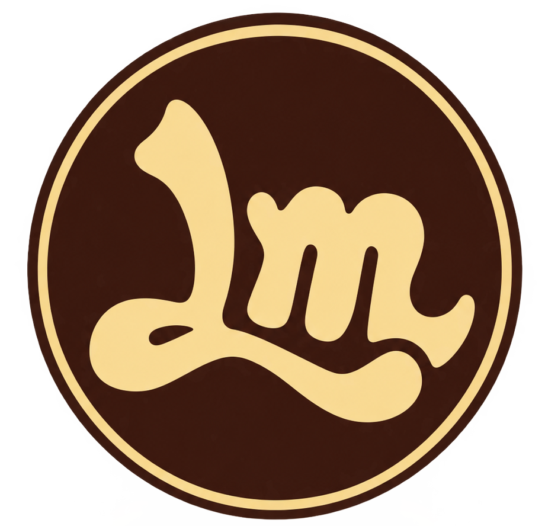
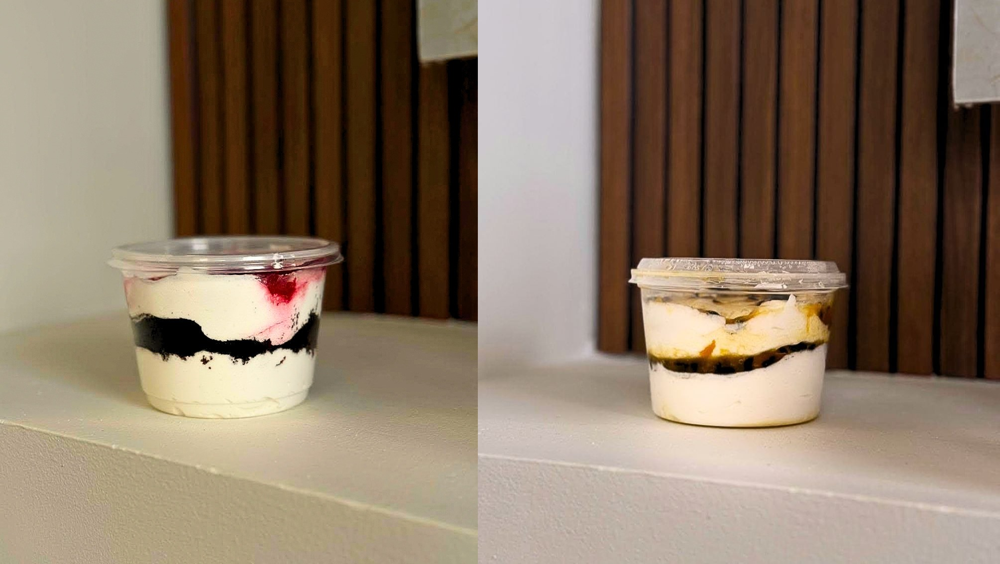
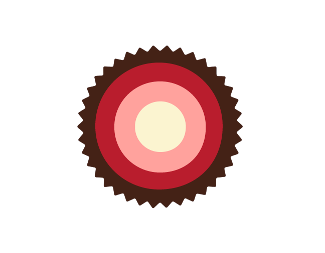

01
Cielo Pinto
17 años
UNA EXPERIENCIA PARA DISFRUTAR
Energía, frescura, calidad y cercanía en cada experiencia. Conoce la historia detrás de nuestros característicos “Melolos”.
CONOCE NUESTRA HISTORIA
Un momento para disfrutar,
compartir y olvidarse por un instante de las preocupaciones.
NUESTRO COMIENZO
La historia de LOLOSMEL comienza en el cumpleaños de la hermana de Cielo. Mientras preparaba un pastel de cumpleaños, surgió un inconveniente durante su elaboración.
Cielo decidió darle a probar el resultado a su pareja, Samuel. Para su sorpresa, el sabor les gustó mucho y decidieron compartirlo con algunas de sus amistades.
A partir de esta experiencia comenzaron a recibir cada vez más pedidos. Lo que inicialmente surgió de manera espontánea fue creciendo poco a poco hasta convertirse en LOLOSMEL.
Esta experiencia también dio origen al nombre de sus característicos postres: los “Melolos”.

LOS CREADORES
Una historia construida con creatividad, dedicación y ganas de compartir.
17 años
17 años
NUESTRO PROPÓSITO
Ofrecer productos que brinden una experiencia agradable y cercana, destacándose por su calidad, frescura y personalidad, mientras LOLOSMEL continúa creciendo como un emprendimiento joven que busca conectar con sus clientes y convertir cada momento en una experiencia para disfrutar.
HACIA DÓNDE VAMOS
Consolidarse como un emprendimiento reconocido por sus “Melolos”, su identidad y la cercanía con sus clientes, logrando crecer de manera constante y manteniendo la esencia joven, fresca y auténtica que caracteriza a LOLOSMEL.
NUESTRA ESTÉTICA
Cada color representa una parte de la personalidad y esencia de LOLOSMEL, creando una identidad joven, cálida y reconocible.
#B91D2D
Fuerza · Energía · Personalidad#FBDFA2
Calidez · Alegría · Cercanía#FFA29D
Juventud · Frescura · Conexión#FBF4D0
Suavidad · Equilibrio#442216
Contraste · SolidezDESDE MAXIMAZE
Desde MAXIMAZE, estos elementos se organizan para construir una narrativa visual coherente y característica de LOLOSMEL, buscando que sus colores, personalidad e historia puedan reconocerse y relacionarse fácilmente con la marca.

MAXIMAZE × LOLOSMEL